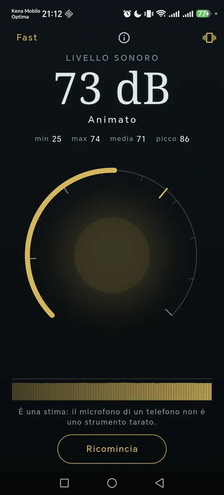
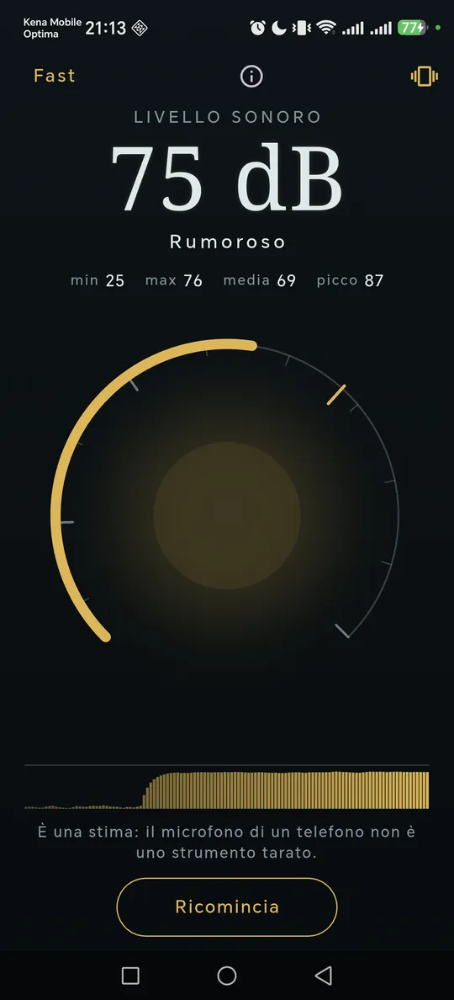
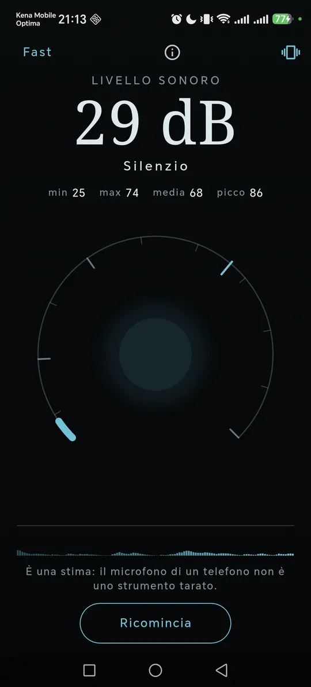

ItalianoEnglish
Si apre e misura. Niente pulsante di avvio, niente impostazioni da visitare prima: il numero è già lì, con la parola che lo accompagna e l'ultimo minuto disegnato sotto.

Si apre e misura: il livello, e la parola che lo traduce. 
Un ambiente si giudica dal rumore nel tempo, non da un istante. 
La media è quella energetica: il rumore di prima pesa ancora.
Cosa fa
- Il livello in dB, e la parola che lo traduce. Tranquillo, Animato, Rumoroso, Dannoso a lungo: 62 dB non dice niente a chi non fa questo mestiere.
- Minimo, massimo, media e picco da quando hai ricominciato.
- L'ultimo minuto sotto il numero, con la riga degli 85 dB sempre visibile: un ambiente si giudica dal rumore nel tempo, non da un istante.
- Fast e Slow, le due ponderazioni temporali dei fonometri veri — 125 ms e 1 s.
- Sopra 85 dB il telefono vibra e la schermata diventa rossa: è il livello oltre il quale l'esposizione prolungata danneggia l'udito.
- In italiano e in inglese, secondo la lingua del telefono.
La media è quella energetica, e non è un dettaglio
Decibel calcola il Leq, la media energetica, e non la media aritmetica dei decibel. La differenza si vede il giorno in cui qualcuno sbatte una porta: i decibel sono una scala logaritmica, e sommarli come numeri normali significa cancellare quella porta mediandola con il silenzio che le sta intorno. La media energetica non lo permette — ed è per questo che è quella che usano le norme sull'esposizione al rumore.
È una stima, e va detto
Il microfono di un telefono non è uno strumento tarato, e nessuna app può renderlo tale: cambia da modello a modello, comprime i suoni forti e ha un fondo suo. Se hai un fonometro vero puoi confrontare e spostare la calibrazione, e da lì in poi la scala è la tua. Quello che l'app non fa è fingere una precisione che il sensore non ha.
I tuoi dati restano tuoi
Decibel non registra: il suono è analizzato nella memoria del telefono e buttato via, e nessun file viene mai scritto. Niente account, niente posizione, nessun server nostro. I permessi sono tre — il microfono per sentire l'ambiente, Internet per gli annunci, la vibrazione per l'avviso degli 85 dB.
Come si paga
Con un banner in fondo, lontano dai comandi, e un interstiziale saltuario solo dopo una misura completata. Nessun abbonamento, nessuna funzione tenuta in ostaggio.
Dove trovarla
Non è ancora su Google Play. Quando ci sarà, il collegamento comparirà qui.